AI governance guide
The sections a practical AI policy needs, what to include in each and the decisions your leadership team has to make.
Most organizations already have people using AI tools at work, often without clear rules. A short, practical policy sets expectations, protects information and gives people the confidence to use approved tools well. This guide sets out a practical structure. Use it as a checklist while you write a policy in your own words.
Set the intent and the boundaries.
Why the policy exists, and the balance it strikes between productive use of AI and protecting information, people and reputation.
DecideIs the tone enabling, cautious, or deliberately both?
Who it covers (employees, contractors, volunteers), which tools (standalone generative AI, AI features in existing software, tools you build) and personal devices used for work.
DecideHow it relates to existing policies. State that the stricter rule applies.
Plain definitions of AI tool, generative AI, approved tool, output, personal information and confidential information.
DecideReuse terms from your privacy and security policies so they match.
Five or six short principles: people stay accountable, protect information, verify output, be transparent, treat people fairly, use approved tools.
DecideWhich principles reflect your values and your sector.

The sections people will read most. Make them concrete.
Where the approved list lives, what each tool may be used for, the highest level of information it may receive, and how to request a new tool.
DecideWho assesses tools, and what you check in vendor terms: data retention, training on your data, data location and security.
A simple table that matches each information classification to approved and unapproved tools, plus a default rule for when someone is unsure, such as treating the information as confidential and asking.
| Example classification | Approved AI tools | Unapproved or public AI tools |
|---|---|---|
| Public | Permitted | Permitted |
| Internal | Permitted | Not permitted |
| Confidential | Only in tools approved for it | Not permitted |
| Personal information | Only in approved tools, after a privacy review | Not permitted |
| Restricted | Only with written approval | Not permitted |
DecideAlign with your existing classification scheme, and confirm privacy, records and data location obligations with counsel.
Practical examples such as drafting, summarizing, brainstorming, research starting points and code assistance, each with its review condition.
DecideWhich uses are open to everyone and which need approval.
Clear examples: entering information above the permitted level; making or materially influencing decisions about individuals, such as hiring, discipline or eligibility, without an approved process and meaningful human review; impersonation and deceptive synthetic media; presenting unchecked output as fact; bypassing security controls.
DecideWhich additional prohibitions your sector or regulators require.
Keep people accountable and risks visible.
Who is responsible for output, what to check (errors, invented citations, bias, outdated or sensitive content) and which uses need a second reviewer.
DecideYour threshold for higher-impact review.
When to disclose AI use in external content, how AI systems that talk to clients or the public identify themselves, and labelling of synthetic media.
DecideYour disclosure threshold.
Respecting tool licence terms, checking external content before publication, and who owns work created with AI tools.
DecideWhich agreements govern ownership.
Company accounts and single sign-on, required privacy settings, approval before connecting AI to systems, and awareness of AI-enabled phishing and deepfakes.
DecideWhich settings are mandatory for each tool.
What to report (information entered that the policy does not permit, harmful or materially wrong output, unexpected tool behaviour, suspected AI-enabled fraud), where to report it, how quickly, and protection against retaliation.
DecideThe reporting channel and who owns the response.
Make the policy owned, maintained and enforceable.
A short table of who does what: policy owner, IT and security, privacy, legal, people leaders and everyone in scope.
DecideWho owns the policy and reports on AI use to leadership.
The training required before using approved tools, and how often it is refreshed.
DecideWhether higher-impact uses need additional training.
How to request an exception, who approves it, and that approvals are documented and time-limited.
DecideThe approver and the maximum duration.
How breaches are handled, by reference to existing disciplinary processes, contracts and any collective agreements.
DecideWhether access can be suspended during a review.
How often the policy is reviewed, at least annually is common, and the triggers for an earlier review: a change in law, the tools in use, or the way the organization uses AI.
Put this at the top of the final policy.
A policy people read is worth more than a complete one they skip. Aim for a few pages, plain language and real examples, and move detail such as the approved tool list into a separate page you can update without re-approving the policy.
Through AI Governance, ilene.ai works with your leadership, legal and privacy advisors to set AI policy, approved tools and oversight that fit how your organization operates.